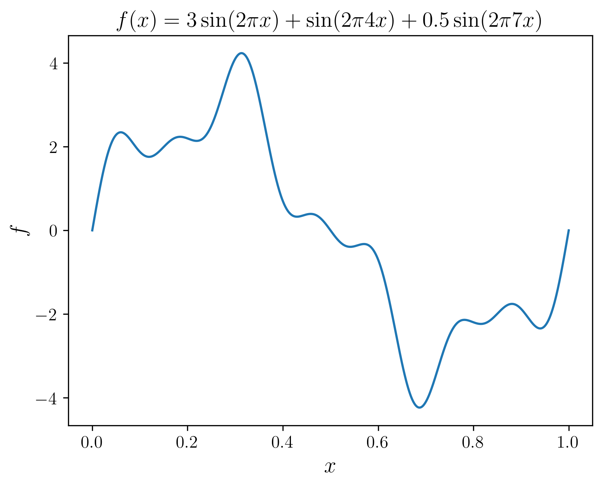
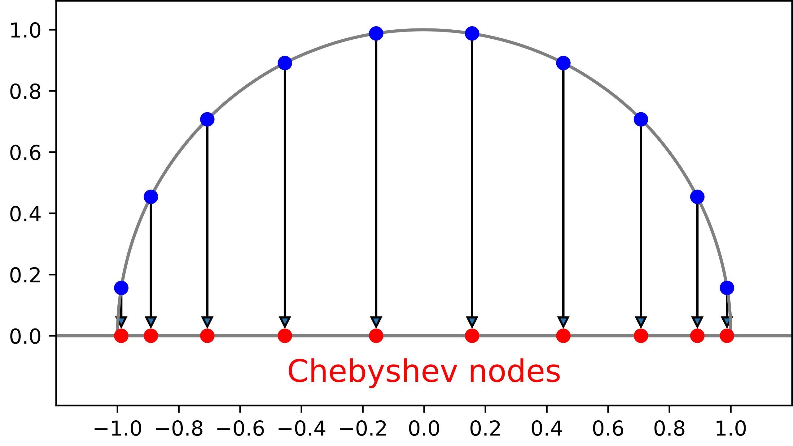

Spectral methods are a class of methods for numerical PDEs that utilizes spectral expansions of the unknown function.
Consider the 1D advection equation again: $$ \frac{\partial u}{\partial t} + v \frac{\partial u}{\partial x} = 0 $$
On a periodic domain, we can expand the unknown function $u$ in a Fourier series: $$ u(x,t) = \sum_{n=-\infty}^{\infty} \hat{u}_n(t) e^{ikx},\quad k = \frac{2\pi n}{L} $$
Plugging the Fourier series back into the original equation, we get:
$$ \sum_{n=-\infty}^{\infty} \left( \frac{d \hat{u}_n}{d t} + vik\hat{u}_n \right) e^{ikx} = 0 $$Since the Fourier basis functions are linearly independent, their coefficients must be identically zero. We obtain a set of ODEs for the Fourier coefficients: $$ \frac{d \hat{u}_n}{d t} + vik\hat{u}_n = 0 $$
In this simple case, we can even solve the ODEs analytically: $$ \hat{u}_n(t) = \hat{u}_n(0) e^{-ivkt} $$
The general procedure of solution is to first transform the initial condition into a Fourier series:
$$ u(x,0) = \sum_{n=-\infty}^{\infty} \hat{u}_n(0) e^{ikx} $$Then, the Fourier coefficients are evolved in time: $$ \hat{u}_n(t) = \hat{u}_n(0) e^{-ivkt} $$
Finally, the solution is reconstructed from the Fourier coefficients: $$ u(x,t) = \sum_{n=-\infty}^{\infty} \hat{u}_n(t) e^{ikx} $$
In practice, the inifinite sum is often truncated after finite terms:
$$ u(x, t) \approx \sum_{n=0}^{N} \hat{u}_n(t) e^{ikx} $$The error associated to this approximation scales as $\varepsilon\sim O(e^{-N})$. We call this "exponential convergence".
Let's see how the spectral method does on a grid of 30 points:
Spectral method on the tophat:
For many linear equations with the right boundary conditions, spectral methods can often yield solutions to machine precision. This is because the linear equations can be solve exactly using the spectral method, and we are simply evaluating the solution.
For nonlinear equations and some linear equations with potential terms, spectral method can be cumbersome to use.
For example, consider the Schrödinger equation again:
$$ i\hbar \frac{\partial \psi}{\partial t} = -\frac{\hbar^2}{2m} \frac{\partial^2 \psi}{\partial x^2} + V(x)\psi $$We expand the unknown function in Fourier series again: $$ \psi(x, t) = \sum_n c_n(t)e^{ik_nx},\quad k_n = \frac{2\pi n}{L} $$
Plugging the expansion into the original equation, we have:
$$ \sum_n \left( i\hbar \frac{d c_n}{d t} - \frac{\hbar^2}{2m}k_n^2c_n \right) e^{ik_nx} = \sum_n V(x)c_n e^{ik_nx} $$Due to the existence of the $V(x)$ term, we can't simply invoke the orthogonality of the Fourier basis functions to obtain a set of ODEs. Instead, we have to Fourier expand $V(x)$ as well: $$ V(x) = \sum_m \hat{V}_m e^{i k_m x}, \quad k_m = \frac{2\pi m}{L} $$
Including the $V(x)$ expansion, we get:
$$ \begin{align} \sum_n \left( i\hbar\frac{d c_n}{d t} - \frac{\hbar^2}{2m}k_n^2c_n \right) e^{ik_nx} &= \sum_n \sum_m c_n\hat{V}_m e^{ik_mx} e^{ik_nx} \\ &= \sum_n \sum_l c_l \hat{V}_{n-l} e^{ik_nx} \end{align} $$The orthogonality of the Fourier basis functions now allows us to obtain a set of ODEs for the Fourier coefficients: $$ i\hbar\frac{d c_n}{d t} - \frac{\hbar^2}{2m}k_n^2c_n = \sum_l \hat{V}_{n-l} c_l $$
The $\sum \hat{V}_{n-l}c_l$ term is a matrix multiplying a vector, which is a $O(N^2)$ operation. If we use e.g. RK methods to solve the ODEs, it can get quite expensive for large $N$.
In practice, we often use a "pseudospectral" method, where we use the Fast Fourier Transform (FFT) to compute inverse Fourier transform of $c_n$, then multiply it by $V(x)$ on a grid, then finally use FFT to compute the Fourier transform of the result.
This is an improvement since FFT costs $O(N\log N)$, but it is still more expensive than the $O(N)$ cost of finite difference methods.
The Fourier transform is the continuum limit of a Fourier series expansion:
$$ \begin{align} f(x) &= \int_{-\infty}^{\infty} \hat{f}(k) e^{-ikx} dk \\ \hat{f}(k) &= \frac{1}{2\pi} \int_{-\infty}^{\infty} f(x) e^{ikx} dx \end{align} $$On a finite grid, the Fourier transform is a discrete sum: $$ \hat{f}_n = \frac{1}{N} \sum_{j=0}^{N-1} f_j e^{ik_nx_j},\quad k_n = \frac{2\pi n}{L},\quad x_j = \frac{jL}{N} $$
Computing the discrete Fourier transform is like a matrix multiplying a vector, which costs $O(N^2)$ operations.
The FFT breaks the calculation of the discrete Fourier transform into even and odd terms, and evaluate the subproblems recursively: $$ \begin{align} \hat{f}_n &= \frac{1}{N} \sum_{j=0}^{N-1} f_j e^{ik_nx_j} = \frac{1}{N} \sum_{j=0}^{N-1} f_j e^{2\pi i nj/N} \\ &= \frac{1}{N} \sum_{j=0}^{N/2-1} f_{2j} e^{2\pi in (2j)/N} + \frac{1}{N} \sum_{j=0}^{N/2-1} f_{2j+1} e^{2\pi in(2j+1)/N} \\ &= \frac{1}{N} \sum_{j=0}^{N/2-1} f_{2j} e^{2\pi inj/(N/2)} + e^{2\pi in/N} \frac{1}{N} \sum_{j=0}^{N/2-1} f_{2j+1} e^{2\pi inj/(N/2)} \\ \end{align} $$
Due to divide an conquer, the complexity of an FFT is only $O(N\log_2 N)$.
FFTW (Fastest Fourier Transform in the West) is one of the fastest
implementations of FFT. It is a C library that can be used in C++
and Fortran. It is also available in Python via the pyfftw package.
numpy.fft provides its own FFT implementation. Often
times it is good enough for most applications.
Let's transform this function on a grid of $N = 1000$ points:
Result from numpy.fft.fft:
The $x$ axis is given by numpy.fft.fftfreq(N)*N
Result from numpy.fft.fft, zoomed in:
Fourier transform is great for problems with periodic boundary conditions, since the basis functions $e^{ikx}$ is periodic.
For problems with non-periodic boundary conditions, we can use Chebyshev polynomials as basis functions: $$ T_n(x) = \cos(n \cos^{-1} x),\quad -1\leq x \leq 1 $$
The Chebyshev expansion of an arbitrary function $f(x)$ is given by: $$ f(x) = \sum_{n=0}^{\infty} \hat{f}_n T_n(x) $$
The expansion coefficients are computed using:
$$ \hat{f}_n = \frac{2}{\pi} \int_{-1}^{1} \frac{f(x) T_n(x)}{\sqrt{1-x^2}} dx $$Surprisingly, this integral can be computed using the FFT using a change of variables: $$ \begin{align} \hat{f}_n &= \frac{2}{\pi} \int_{-1}^{1} \frac{f(x) T_n(x)}{\sqrt{1-x^2}} dx \\ &= \frac{2}{\pi} \int_{0}^{\pi} f(\cos\theta) T_n(\cos\theta) d\theta \\ &= \frac{1}{\pi} \int_{-\pi}^{\pi} f(\cos\theta) \cos(n\theta) d\theta \\ \end{align} $$
If we know the values of function $f$ at points $x_j = \cos j\pi/N$, then the expansion coefficients are:
$$ \hat{f}_n = \frac{1}{N} \sum_{j=0}^{N-1} f(\cos\theta_j) \cos(n\theta_j),\quad \theta_j = \frac{j\pi}{N} $$This is the discrete Fourier transform of the function $F(\theta) = f(\cos\theta)$.
Due to the unique relation between Chebyshev and Fourier expansions, we often use an irregular grid when using Chebyshev expansion for spectral method:
